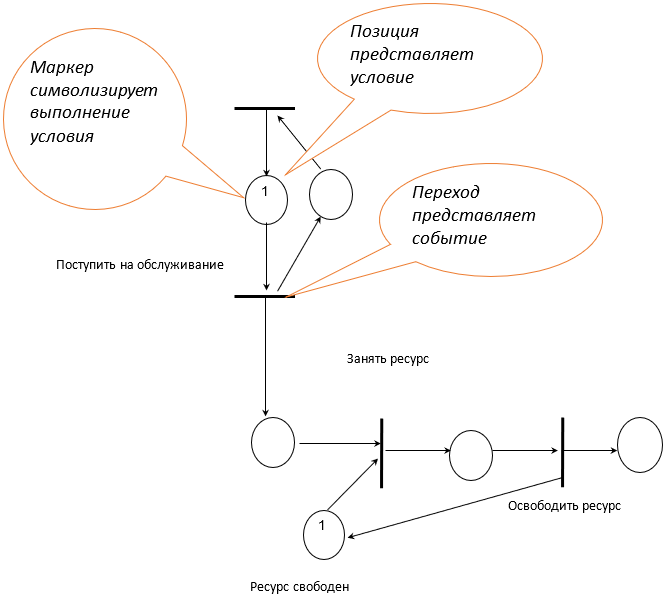
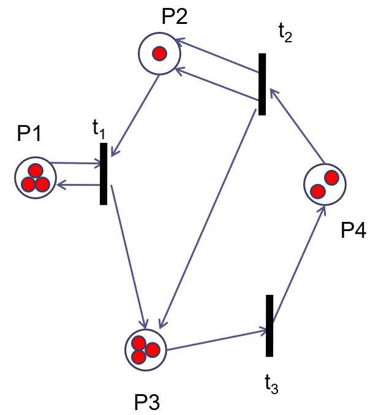
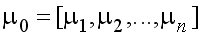
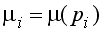
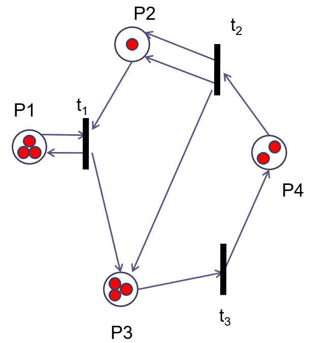
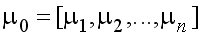
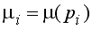
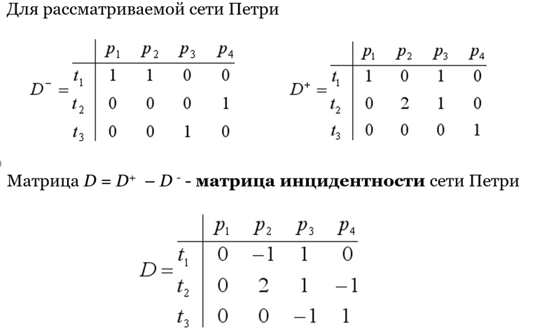

Основные определения. Способы задания сети Петри
Сеть Петри – это двудольный ориентированный мультиграф, все множество X вершин которого разбито на два класса так, что дуги соединяют вершины только из разных классов.
При моделировании отражаются два аспекта систем: события и условия.
Возможность наступления событий обеспечивается выполнением определенных условий.
Условиям соответствуют позиции сети Петри, а событиям, происходящим в системе, соответствуют переходы.
Для представления динамики функционирования позициям могут присваиваться фишки, которые изображаются точками внутри вершин-позиций.
Присвоение фишек позициям сети Петри называется маркировкой, или разметкой.
Сети Петри функционируют, переходя от одной маркировки к другой.

Графическое представление сети Петри: 
Множество позиций P = {p1, p2, p3, p4}
Множество переходов T = {t1, t2, t3 }
Начальная маркировка сети обозначается вектором 
 - определяют для каждой позиции p i-того количество фишек в этой позиции.
Как и любой граф, сеть Петри может быть задана графическим, аналитическим и матричным способами.
Графическое представление сети Петри: 
Множество позиций P = {p1, p2, p3, p4}
Множество переходов T = {t1, t2, t3 }
Начальная маркировка сети обозначается вектором 
 - определяют для каждой позиции p i-того количество фишек в этой позиции.
Как и любой граф, сеть Петри может быть задана графическим, аналитическим и матричным способами.
При аналитическом способе сеть Петри задается как C = (P,T,F,H,μ0), где, кроме множеств позиций Р и переходов Т, задаются входная F и выходная Н функции.
Через F(tj) обозначается множество входных позиций, а через H(tj) – множество выходных позиций перехода t j-тое; μ0 – начальная маркировка сети.
Матричная форма определения сети Петри эквивалентна аналитическому способу задания C = (P,T,D–,D+,μ0). Здесь D– и D+ – матрицы входных и выходных инциденций соответственно размером m × n, где m – число переходов и n – число позиций. Элемент d i-тое j-тое – матрицы D– равен кратности дуг, входящих в i-й переход из j-й позиции.
Элемент d i-тое j-тое+ матрицы D+ равен кратности дуг, выходящих из i-гo перехода в j-ю позицию
